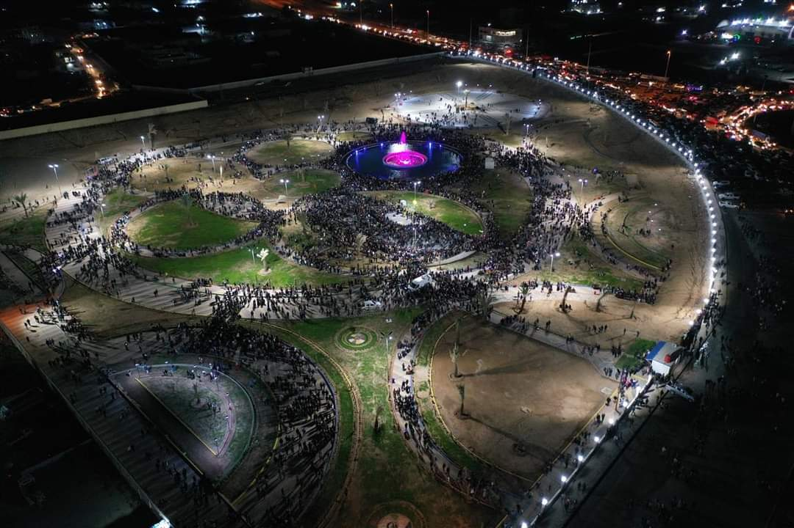

محافظة الحسكة
: تفاصيل عن محافظة الحسكة
تقع محافظة الحسكة في الجزء الشمال الشرقي من سورية ، تحدها تركيا من الشمال والعراق من الشرق ومحافظة دير الزور من الجنوب و الرقة من الغرب . تبلغ مساحتها (23.33) ألف كم2،
وتشكل نحو (12.6%) من إجمالي مساحة سورية ، وتعد الحسكة ثالث أكبر محافظة من حيث المساحة في القطر.
